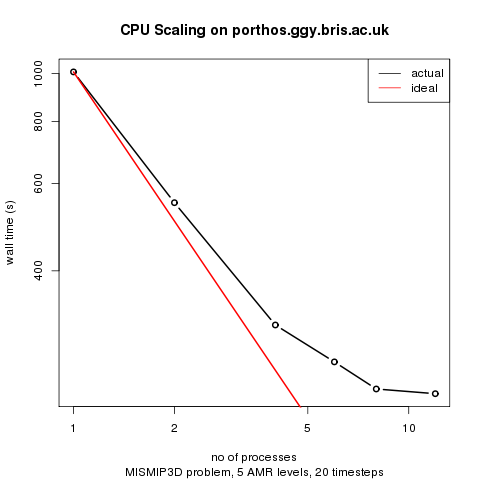

BISICLES build instructions (deprecated -- Chombo 3.1)
To build (and run) BISICLES you need to
- Meet the system requirements
- Check out the source code
- Set up some third party dependencies
- Configure Chombo by editing some definitions in a makefile
- Configure the (optional) python interface by editing some definitions in a makefile
- Compile driver, the main standalone BISICLES executable.
- Run driver on a simple problem to ensure that it works
Optionally, you might also
- Compile the filetools, including nctoamr, a tool to convert NetCDF files into hdf5 files that BISICLES can read.
- Compile control, which can be used to solve an inverse problem (or control problem)
System requirements.
BISICLES requires the GNU/Linux operating system (actually, it should compile and run elsewhere, but we never do that), plus both C++ and FORTRAN compilers, a GNU-compatible make, and Perl. On the whole, life is easiest with gcc (including g++ and gfortran), and we shall assume that is what will be used. A modernish gcc is required - see the older build instructions if you want to build with gcc 4.1.2, for example. To build the parallel version, you need an MPI environment, which provides the mpicc and mpicxx (or equivalents). You will also need VisIt
to view the data BISICLES produces (other programs can be put to use, but VisIt is by far the most convenient)
There are some site specific notes
Check out the source code.
Since this readme file lives in the source code repository, you might have already checked the source code out. There are two source trees, Chombo, and BISICLES, and the rest of this guide assumes that you have a directory called $BISICLES_HOME which contains the two.
To obtain the source trees, you first need an ANAG repository account. Once that is sorted out, create a root directory for both source trees
> export BISICLES_HOME=/wherever/you/like #assumes bash...
> mkdir -p $BISICLES_HOME
> cd $BISICLES_HOME
> svn co https://anag-repo.lbl.gov/svn/Chombo/release/3.1 Chombo
> svn co https://anag-repo.lbl.gov/svn/BISICLES/public/trunk BISICLES
Dependencies.
Chombo requires the hdf5 libraries. The current version of hdf5 is 1.8. However, Chombo was written to build against version 1.6, which has a somewhat different interface than 1.8. Luckily, the hdf5 developers took this into account and provided a backwards compatible 1.6 interface in the current release. Three approaches to hdf5 will work:
- Download the older 1.6 version of hdf5 and build against that one.
- Download the current 1.8 release and make sure the compilation flag "-DH5_USE_16_API " is present to Make.defs.local
- Use an already installed hdf5, and modify Make.defs.local accordingly
The rest of the instructions in this document employ the second approach. An earlier set employed the first, and works with older gcc (e.g 4.1.2)
Glimmer-CISM also requires netcdf, and in a non-standard configuration to boot. BISICLES includes some complementary tools which require netcdf. So, while you could use the version installed on your system it is often simpler to compile netCDF from source.
There should be a script, download_dependencies.sh (in the same directory as this file, $BISICLES_HOME/BISICLES/docs) that will get the (version 1.8.9) hdf5 sources and unpack them, twice : once into hdf5/serial/src and once into hdf5/parallel/src. It assumes $BISICLES_HOME is set. It should contain the following
cd $BISICLES_HOME
echo `pwd`
#get hdf5 sources
if !(test -e hdf5-1.8.9.tar.bz2) then
echo "downloading hdf5-1.8.10.tar.gz"
wget http://www.hdfgroup.org/ftp/HDF5/prev-releases/hdf5-1.8.9/src/hdf5-1.8.9.tar.bz2
fi
mkdir -p hdf5/parallel/src
tar -jxf hdf5-1.8.9.tar.bz2 -C hdf5/parallel/src
mkdir -p hdf5/serial/src
tar -jxf hdf5-1.8.9.tar.bz2 -C hdf5/serial/src
#get netcdf sources
if !(test -e netcdf-4.1.3.tar.gz) then
echo "downloading netcdf-4.1.3.tar.gz"
wget ftp://ftp.unidata.ucar.edu/pub/netcdf/netcdf-4.1.3.tar.gz
fi
mkdir -p netcdf/parallel/src
tar -zxf netcdf-4.1.3.tar.gz -C netcdf/parallel/src
mkdir -p netcdf/serial/src
tar -zxf netcdf-4.1.3.tar.gz -C netcdf/serial/src
If you want to build a single-processor BISICLES, then build hdf5 in hdf5/serial/src, and if you want to build a multi-processor BISICLES, then build hdf5 in hdf5/parallel/src. Similar pairs of directories will be built for netcdf.
Building serial hdf5
Before starting, make sure that you can run gcc. Enter the appropriate source directory
> cd $BISICLES_HOME/hdf5/serial/src/hdf5-1.8.9/
and configure hdf5 like so
CC=gcc CFLAGS=-fPIC ./configure --prefix=$BISICLES_HOME/hdf5/serial/ --enable-shared=no
note the --enable-shared=no. This isn 't strictly necessary - you could use shared libraries - but we find they are more trouble than they are worth, especially when running on clusters. The -fPIC flag will be useful later if you want to build the experimental libamrfile.so shared library that can be used to manipulate Chombo (and BISICLES) output with languages that support a plain C function calling convention, like FORTRAN 90 and GNU R (and hopefully MATLAB). Configure will spit out a long list of tests, and hopefully pass the all to produce a report that reads as follows:
SUMMARY OF THE HDF5 CONFIGURATION
=================================
...
Languages:
----------
Fortran: no
C++: no
Features:
---------
Parallel HDF5: no
High Level library: yes
Threadsafety: no
Default API Mapping: v18
With Deprecated Public Symbols: yes
I/O filters (external): deflate(zlib)
I/O filters (internal): shuffle,fletcher32,nbit,scaleoffset
MPE: no
Direct VFD: no
dmalloc: no
Clear file buffers before write: yes
Using memory checker: no
Function Stack Tracing: no
GPFS: no
Strict File Format Checks: no
Optimization Instrumentation: no
Large File Support (LFS): yes
Don 't worry that the C++ and Fortran languages are not enabled : Chombo uses the C interface, and (when we come to compile that too), so does netcdf. Assuming this is all OK, type
> make install
and you, after a round of compiling and copying, you should see that the hdf5 libraries bin,doc,include and src have appeared in $BISICLES_HOME/hdf5/serial/.
Building parallel hdf5
Before starting, make sure that the mpi environment is in place and that you can run mpicc. Enter hdf5/parallel/src/hdf5-1.6.10/ directory
> cd $BISICLES_HOME/hdf5/parallel/src/hdf5-1.8.9/
and configure hdf5, this time enabling MPI through the use of mpicc in place of gcc
> CC=mpicc ./configure --prefix=$BISICLES_HOME/hdf5/parallel/ --enable-shared=no
This time, configure 's final report should read
SUMMARY OF THE HDF5 CONFIGURATION
=================================
(...)
Languages:
----------
Fortran: no
C++: no
Features:
---------
Parallel HDF5: mpicc
High Level library: yes
Threadsafety: no
Default API Mapping: v18
With Deprecated Public Symbols: yes
I/O filters (external): deflate(zlib)
I/O filters (internal): shuffle,fletcher32,nbit,scaleoffset
MPE:
Direct VFD: no
dmalloc: no
Clear file buffers before write: yes
Using memory checker: no
Function Stack Tracing: no
GPFS: no
Strict File Format Checks: no
Optimization Instrumentation: no
Large File Support (LFS): yes
Note especially the line 'Parallel HDF5: mpicc '
Assuming this is all OK, type
> make install
this time, the bin,doc,include and src directories should end up in $BISICLES_HOME/hdf5/parallel/.
Building serial netcdf
Before starting, make sure that you can run gcc,g++ and gfortran. Enter the appropriate source directory
> cd $BISICLES_HOME/netcdf/serial/src/netcdf-4.1.3/
Now, netcdf needs to link hdf5 : it doesn 't really matter which version but we might as well use the one we have. So, we have a custom configure line
> CC=gcc CPPFLAGS=-I$BISICLES_HOME/hdf5/serial/include/ CXX=g++ FC=gfortran LDFLAGS=-L$BISICLES_HOME/hdf5/serial/lib/ ./configure --prefix=$BISICLES_HOME/netcdf/serial --enable-shared=no --enable-static=yes --enable-dap=no
Next, compile, test, and install netcdf
> make check install
and assuming all goes well, netcdf 4.1.3 will now be installed in $BISICLES_HOME/netcdf/serial
Building parallel netcdf
So far, the only difference between parallel and serial netcdf installs is the link to parallel hdf5 and the use of the MPI compiler wrapper. Possibly, building two versions of netcdf is a waste of time.
update parallel netcdf may be needed to compile parallel glimmer-CISM, otherwise it can be skipped.
> cd $BISICLES_HOME/netcdf/parallel/src/netcdf-4.1.3/
> CC=mpicc CXX=mpiCC FC=mpif90 CPPFLAGS="-DgFortran -I$BISICLES_HOME/hdf5/parallel/include/" LDFLAGS=-L$BISICLES_HOME/hdf5/parallel/lib/ ./configure --prefix=$BISICLES_HOME/netcdf/parallel --enable-shared=no --enable-static=yes --enable-dap=no
> make check install
Chombo configuration
Next we need to set up Combo 's configuration (which BISICLES will inherit automatically). The main task here is create a file called $BISICLES_HOME/Chombo/lib/mk/Make.defs.local, and there is version stored in this directory that should be easy enough to edit. First, copy it into $BISICLES_HOME
> cp $BISICLES_HOME/BISICLES/docs/Make.defs.local $BISICLES_HOME
At the very least, you will need to edit the line that reads
BISICLES_HOME=...,
to give the correct value. If you don 't have MPI, there are a few lines to comment out. You might also want to tinker with the optimization flags and so on. Then create a link so that Chombo sees Make.defs.local in the place it expects
>ln -s $BISICLES_HOME/Make.defs.local $BISICLES_HOME/Chombo/lib/mk/Make.defs.local
Configuring the Python interface
To make use of the python interface, you need to ensure that you have a suitable python installation. This is usually straightforward in modern GNU/linux distributions, since Python is so widespread. Before you can compile BISICLES with Python support, find out
- where the header file "Python.h " lives; /usr/include/python2.6, for example
- what linker flags you need, for example -lpython2.6
Now, edit the file
$BISICLES_HOME/BISICLES/code/mk/Make.defs
to define the variables PYTHON_INC and PYTHON_LIBS. There are several examples in the file already.
when you come to compile BISICLES, you should see flags like -DHAVE_PYTHON included in the compilation
Building stand-alone BISICLES
Now we are ready to build one or more BISICLES executables. If you plan to do development work on the code itself, you will want to build an unoptimized version to run in gdb. Run
> cd $BISICLES_HOME/BISICLES/code/exec2D
> make all
This will build a set of Chombo libraries, and then BISICLES. Hopefully, it will complete without errors, and you will end up with an executable called driver2d.Linux.64.g++.gfortran.DEBUG.ex. This one is most useful for low-level debugging of the code - if you are not planning to do that, there is no need for it. If you have a serial computer only, run
> cd $BISICLES_HOME/BISICLES/code/exec2D
> make all OPT=TRUE
to get an optimized executable called driver2d.Linux.64.g++.gfortran.DEBUG.OPT.ex.
An optimized parallel executable driver2d.Linux.64.mpic++.gfortran.DEBUG.OPT.MPI.ex can be built like so
> cd $BISICLES_HOME/BISICLES/code/exec2D
> make all OPT=TRUE MPI=TRUE
For serious runs, this is the one you need. Even on workstations with a few processors (like dartagnan.ggy.bris.ac.uk) noticeable (2X-4X) speed improvements are realized by running parallel code, and on clusters like bluecrystal or hopper.nersc.gov we have obtained 100X speedups for big enough problems (and hope to obtain 1000X speedups).
Finally, should you feel the urge, you can have a non-optimized parallel version, which can be used for hunting down low-level bugs that crop up in parallel operation but not in serial operation.
Make clean
On occasion it might be necessary to rebuild BISICLES entirely, rather than just those parts where a file has changed. To do so, run
make clean
for unoptimized, serial builds,
make clean OPT=TRUE
for optimized serial builds, and
make clean OPT=TRUE MPI=TRUE
for optimized parallel builds
Make realclean
In the event even more houscleaning is desired, the "realclean " target does everything the "clean " target does, and additionally removes many other user-generated files, including all files with the ".hdf5 " suffix (including checkpoint and plot files).
Running BISICLES on a simple problem
All the data to run Frank Pattyn 's MISMIP3D P075 experiment is already present. Change to the MISMIP3D subdirectory, and generate some input files from a template.
> cd $BISICLES_HOME/BISICLES/examples/MISMIP3D
> sh make_inputs.sh
then we are ready to go.
Running on a serial Workstation
On a serial machine, try the 3 AMR level problem (which will have a resolution of 800 m at the grounding line, and 6.25 km far from it).
$BISICLES_HOME/BISICLES/code/exec2D/driver2d.Linux.64.g++.gfortran.DEBUG.OPT.ex inputs.mismip3D.p075.l1l2.l3 > sout.0 2>err.0 &
You can watch progress by typing
> tail -f sout.0
and eventually, you will get a series of plot *2d.hdf5 files that you can view in visit
Running on a parallel Workstation
If you have a parallel machine, run the 5 AMR level problem (which will have a resolution of 200 m at the grounding line, and 6.25 km far from it).
> nohup mpirun -np 4 $BISICLES_HOME/BISICLES/code/exec2D/driver2d.Linux.64.mpic++.gfortran.DEBUG.OPT.MPI.ex inputs.mismip3D.p075.l1l2.l5 &
replace -np 4 with the appropriate count for your machine: this is usually not the number of CPU cores because these will typically share some resources. A good guess is the number of memory buses. Ideally, do a series of scaling experiments to come up with a graph like this one

See also the Site specific notes
You can watch progress by typing
> tail -f pout.0
and eventually, you will get a series of plot *2d.hdf5 files that you can view in visit
Running on a cluster
See the Site specific notes
Compiling and using the file tools
To compile the file tools you might need to edit file $BISICLES_HOME/BISICLES/code/mk/Make.defs. If you have installed BISICLES (and netcdf in particular) following this guide, there should be no need, but otherwise make sure that the variable NETCDF_HOME points to the parent directory of the netcdf include and lib directories. There is little point in building parallel file tools, so type
cd $BISICLES_HOME/BISICLES/code/filetools/
make all
now, say you have a NetCDF file called data.nc, which contains 2D fields named thk and topg arranged on a regular grid (with equal spacing in x and y), and must also contain a 1D field called x, you can run
$BISICLES_HOME/BISICLES/code/filetools/nctoamr2d.Linux.64.g++.gfortran.DEBUG.ex data.nc data.2d.hdf5 thk topg
to obtain a file called data.2d.hdf5 that BISICLES can read as (say) thickness and topography data.
There are a number of other file tools.
Compiling the control problem code
The control problem code is used to solve an optimization problem (inverse problem, or ill-posed problem), using the optimal control methods described by (e.g) MacAyeal (1993) Journal of Glaciology, vol 39 p 91 and elsewhere. It lives somewhat apart from the rest on BISICLES, and has its own executable
cd $BISICLES_HOME/BISICLES/control
make all OPT=TRUE #compile a serial optimized version
make all OPT=TRUE MPI=TRUE #compile a parallel optimized version
There is a Pine Island Glacier example which shows how to run the control problem and what to do with its results.